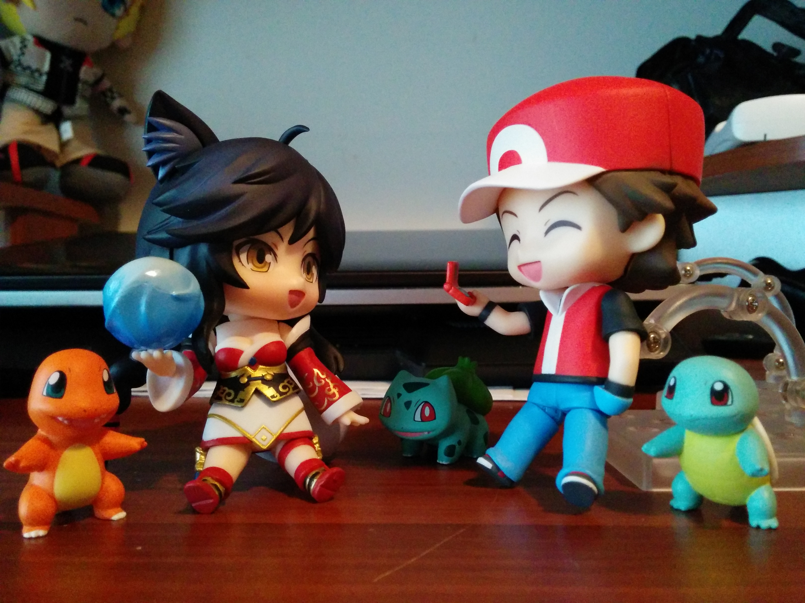

|
Red Nendoroid
 The Red Nendoroid is a great figure to have for any Pokemon fan. He comes with THREE starters from Gen 1: Charmander, Squirtle, and Bulbasaur. Additionally, he also comes with a variety of expressions and even a Pokemon and Masterball. 
The parts are swappable with other Nendoroids as well so you can have fun using the accessories with your other Nendoroids and posing them together. It's a must have in my book although it may be difficult to obtain now since its been discontinued. |

|
Site Created and Maintained by Billy Lam - 2016
|